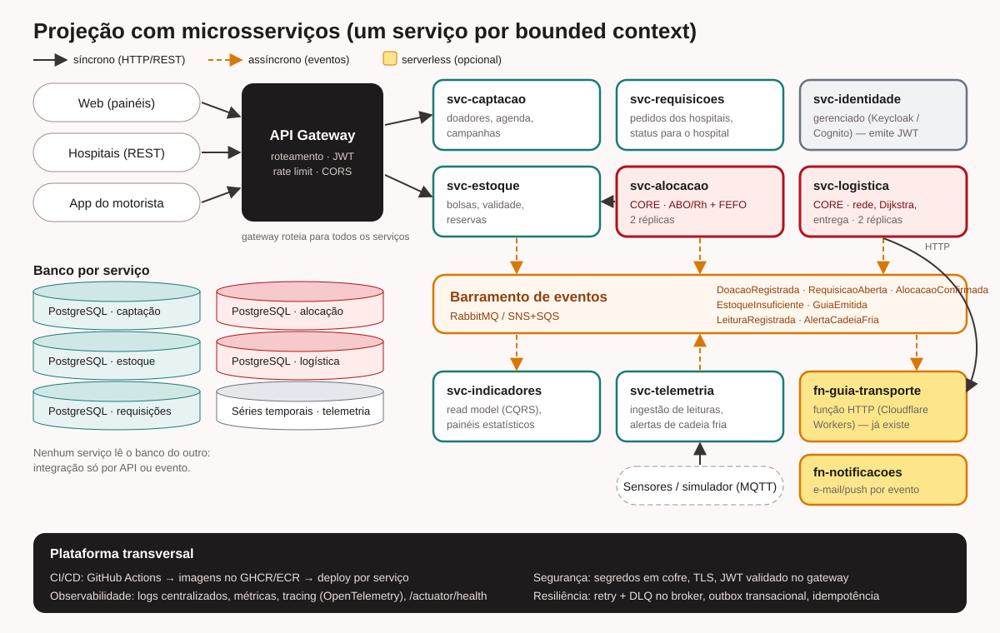

DDD estratégico e tático, arquitetura em três camadas, projeção com microsserviços e três cenários de implantação com orçamento.
Projeto
HemoFlow — Gestão e Distribuição de Hemocomponentes
Disciplina
Projeto Integrador — CESAR School, 2026.2
Data
24/11/2026
Equipe
Bruna Tiburtino · Caio Martins Oliveira · Cauã Henrique Melo Almeida · João Felipe Bonifácio Barros da Silva · Luís Felipe Carneiro da Silva · Luís Henrique Vilas Boas Silva de Sousa · Priscila Pontes Martins da Cunha · Rafael Medeiros Machado Dias · Ruan Carlos Oliveira da Silva
Repositório
Diagramas, planilha e ADRs em docs/arquitetura/
Sumário
Contexto e ponto de partida
DDD estratégico: subdomínios, bounded contexts, glossário e mapa de contextos
Modelo tático do contexto core Alocação e cenário Gherkin
Arquitetura em três camadas
Projeção com microsserviços (e serverless opcional)
Três cenários de implantação com orçamento
Decisões registradas (ADRs), riscos e próximos passos
1. Contexto e ponto de partida
O HemoFlow apoia a rede de distribuição de sangue no fluxo centro de coleta → hemocentro → hospital. O sistema precisa entregar a bolsa certa (compatível e válida), no lugar certo, dentro da janela de tempo e sem romper a cadeia fria. Falhas causam desabastecimento, descarte por vencimento e risco ao paciente.
Como o sistema está hoje
Aspecto
Situação atual
Estilo
Monólito Spring Boot 3 (Java 17) com REST /api/v1 e telas Thymeleaf.
Organização do código
Por camada técnica: api/, dominio/, estoque/, grafo/, rede/, estatistica/, persistencia/.
Dados
Um único PostgreSQL 16 (H2 nos testes), acessado por todos os módulos via Spring Data JPA.
Regras implementadas
Compatibilidade ABO/Rh (matriz 8×8), FEFO, caminho mínimo (Dijkstra) e alerta de cadeia fria; função HTTP serverless da guia de transporte (Cloudflare Workers).
Entrega
Docker + GitHub Actions → imagem no GHCR → deploy no Render, com gate de testes.
Problemas que motivam a remodelagem
Termos ambíguos:Hospital é ao mesmo tempo o solicitante de uma requisição e um nó do grafo; Status tem quatro significados.
Regras espalhadas: controllers que acessam repositórios diretamente; a alocação depende de detalhes de persistência.
Escala desigual: a telemetria (uma leitura a cada 30 s por veículo) tem perfil de carga muito diferente do cadastro de doadores, mas tudo sobe junto.
Acoplamento de dados: qualquer módulo lê qualquer tabela, o que impede separar partes do sistema com segurança.
Objetivo deste planejamento: definir as fronteiras do domínio, o modelo do contexto mais crítico, a organização interna em camadas e um caminho de evolução para microsserviços com custo conhecido. A ideia é evoluir em etapas, sem reescrever tudo de uma vez.
2. DDD estratégico
2.1 Subdomínios
O domínio é a distribuição de hemocomponentes com cadeia fria. Classificamos os subdomínios pelo valor para o negócio: o core é o que diferencia o HemoFlow e merece o melhor esforço de modelagem; o suporte é específico do negócio, mas não é o diferencial; o genérico pode ser comprado ou usado pronto.
Figura 1 — Subdomínios do HemoFlow (docs/arquitetura/diagramas/01-subdominios.svg)
Subdomínio
Tipo
Justificativa
Alocação de Hemocomponentes
Core
Decidir quais bolsas atendem cada pedido (ABO/Rh + FEFO) é o que reduz descarte e evita erro transfusional. É a regra mais crítica e a que mais muda.
Logística com Cadeia Fria
Core
Rota de menor tempo com limite por componente e guia de transporte: diferencial operacional frente a planilhas e ligações telefônicas.
Captação
Suporte
Doadores, agendamentos e campanhas alimentam o estoque, mas seguem processos conhecidos.
Estoque
Suporte
Registro de bolsas, lotes, validade e descarte. Necessário, mas é um CRUD com regras simples.
Demanda Hospitalar
Suporte
Abertura e acompanhamento de requisições pelo hospital.
Telemetria
Suporte
Temperatura e GPS (simulados) durante o transporte, com alertas.
Indicadores
Suporte
Estatística descritiva de estoque e demanda para antecipar falta.
Identidade, Notificações, Mapas, Observabilidade
Genérico
Problemas resolvidos pelo mercado: Keycloak/Cognito, SES, APIs de mapas, Grafana/CloudWatch.
2.2 Bounded contexts
Cada bounded context tem um modelo próprio e uma linguagem ubíqua própria. A mesma palavra pode ter significados diferentes em contextos diferentes, e isso passa a ser explícito.
Contexto
Tipo
Responsabilidade
Conceitos principais (código atual → modelo alvo)
Captação
Sup.
Cadastrar doadores, agendar doações, gerir campanhas e registrar a doação realizada.
Doador, Agendamento, Campanha, DoacaoRealizada
Estoque
Sup.
Manter o inventário físico de bolsas, validade, reservas e descarte.
Bolsa, Lote, Validade, Reserva, StatusBolsa
Requisições Hospitalares
Sup.
Receber o pedido do hospital e informar o andamento a ele.
Regra que diz se uma bolsa de um tipo (doador) pode atender um receptor de outro tipo; matriz 8×8 didática.
Alocação
Requisição
Pedido do hospital: tipo, componente, quantidade e janela de entrega.
Requisições
Solicitante
O hospital no papel de quem pede (no contexto Logística, o mesmo hospital é um Nó de destino).
Requisições
Janela de entrega
Data e hora limite em que o hospital precisa receber as bolsas.
Requisições, Alocação, Logística
Alocação
Decisão de quais bolsas atendem uma requisição. Começa proposta e vira confirmada quando as bolsas são reservadas.
Alocação
Reserva
Bloqueio temporário de uma bolsa no estoque para uma alocação; expira se não for confirmada.
Estoque
FEFO
First Expired, First Out: entre bolsas compatíveis, sai primeiro a de validade mais próxima.
Alocação
Estoque insuficiente
Situação em que não há bolsas compatíveis e válidas em quantidade suficiente; a requisição fica aguardando estoque.
Alocação, Requisições
Cadeia fria
Manutenção da temperatura adequada do componente da saída até o recebimento.
Logística, Telemetria
Limite de cadeia fria
Tempo máximo de transporte por componente (ex.: 120 min hemácias, 90 min plaquetas).
Logística
Nó da rede
Unidade da rede logística: centro de coleta, hemocentro ou hospital.
Logística
Ligação
Aresta entre dois nós, com tempo de deslocamento em minutos.
Logística
Rota
Caminho de menor tempo entre origem e destino (Dijkstra) e seu tempo estimado.
Logística
Guia de transporte
Documento que acompanha a carga: bolsas em ordem FEFO, rota, temperatura exigida, checklist e assinaturas.
Logística
Entrega
Execução do transporte de uma alocação, do despacho ao recebimento.
Logística
Leitura
Medição de temperatura e posição enviada por um dispositivo em um instante.
Telemetria
Alerta de cadeia fria
Evento gerado quando uma leitura sai da faixa ou o tempo excede o limite.
Telemetria, Logística
Doação
Coleta realizada de um doador, que origina uma ou mais bolsas.
Captação, Estoque
Descarte
Retirada definitiva de uma bolsa por vencimento ou quebra de cadeia fria.
Estoque, Indicadores
2.4 Mapa de contextos
Figura 2 — Mapa de contextos (docs/arquitetura/diagramas/02-mapa-de-contextos.svg)
Relação (upstream → downstream)
Padrão
Como funciona
Captação → Estoque
Customer-Supplier
O evento DoacaoRegistrada faz o Estoque criar as bolsas. O Estoque (cliente) negocia o formato do evento com a Captação.
Requisições → Alocação
Published Language
O evento RequisicaoAberta, com contrato JSON versionado, dispara a alocação.
Estoque → Alocação
Open Host Service
O Estoque oferece uma API estável de consulta e reserva de bolsas. A Alocação traduz para o seu modelo (BolsaCandidata).
Alocação → Logística
Customer-Supplier
O evento AlocacaoConfirmada inicia o planejamento da entrega e a emissão da guia.
Telemetria → Logística
Published Language
Os eventos LeituraRegistrada e AlertaCadeiaFria atualizam o status da entrega.
Sensores/simulador → Telemetria
ACL (anticorrupção)
Traduz pacotes brutos (MQTT/JSON do fabricante) para Leitura, protegendo o modelo de mudanças externas.
Todos → Indicadores
Conformist
Os Indicadores aceitam os eventos como são publicados e montam o próprio read model.
Identidade → todos
OHS + Conformist
Token JWT com perfis, validado no gateway e usado por todos os contextos.
3. Modelo tático do contexto core “Alocação”
Escolhemos a Alocação por ser a regra mais crítica: um erro nela pode significar uma transfusão incompatível ou o descarte de uma bolsa. O modelo tático define o que precisa ser sempre verdade (invariantes) e quem garante isso.
Figura 3 — Agregado Alocacao, value objects, serviços de domínio e eventos (docs/arquitetura/diagramas/03-modelo-tatico-alocacao.svg)
Bloco tático
Elemento
Papel
Agregado (raiz)
Alocacao
Única porta de entrada para alterar itens e status; garante as invariantes em uma transação.
Entidade interna
ItemAlocado
Uma bolsa escolhida, com tipo e validade copiados no momento da decisão (auditoria).
Fatos publicados para Logística, Estoque, Requisições e Indicadores.
Por que um agregado pequeno? A Bolsa pertence ao Estoque e não entra no agregado Alocacao: o agregado guarda só a referência e o que foi decidido. Assim, duas alocações concorrentes disputam a reserva no Estoque, uma operação atômica, e não ficam bloqueando uma à outra.
Cenário Gherkin — alocação por compatibilidade e FEFO
Funcionalidade: Alocação de bolsas para requisição hospitalar
Para reduzir descarte e evitar incompatibilidade
Como operador do hemocentro
Quero que o sistema escolha bolsas compatíveis priorizando as de validade mais próxima
Contexto:Dado que hoje é "01/12/2030"E o estoque possui as bolsas de hemácias disponíveis:
| bolsa | tipo | validade |
| BOL-0007 | A+ | 20/12/2030 |
| BOL-0042 | O- | 05/12/2030 |
| BOL-0101 | B+ | 03/12/2030 |
| BOL-0150 | A+ | 30/11/2030 |
Cenário: Alocar bolsas compatíveis respeitando FEFO
Dado que o Hospital da Restauração abriu a requisição "REQ-17"
| tipo receptor | componente | quantidade | janela de entrega |
| A+ | Hemácias | 2 | 01/12/2030 14:00 |
Quando o operador solicitar a alocação da requisição "REQ-17"Então a alocação deve ser confirmada com as bolsas na ordem:
| ordem | bolsa | tipo |
| 1 | BOL-0042 | O- |
| 2 | BOL-0007 | A+ |
E a bolsa "BOL-0101" não deve ser considerada por ser incompatível com A+
E a bolsa "BOL-0150" não deve ser considerada por estar vencida
E as bolsas alocadas devem ficar com status "RESERVADA" no estoque
E o evento "AlocacaoConfirmada" deve ser publicado para a Logística
Cenário alternativo previsto: com apenas 1 bolsa compatível e válida para uma requisição de 2, nenhuma bolsa é reservada, a requisição passa para AGUARDANDO_ESTOQUE e o evento EstoqueInsuficiente é publicado (invariante 4). Os dados do cenário são os mesmos usados nos testes da função da guia de transporte.
4. Arquitetura em três camadas
Dentro de cada contexto, seja no monólito modular ou num microsserviço, o código segue três camadas, e cada camada só depende da camada de baixo. A mesma estrutura serve para hoje e para depois da extração dos serviços.
Figura 4 — Três camadas, com os pacotes reais do repositório (docs/arquitetura/diagramas/04-arquitetura-tres-camadas.svg)
Camada
Responsabilidade
Pode / não pode
Apresentação
Receber HTTP, validar a entrada (DTO + Bean Validation), autenticar e traduzir erros (400/404/422).
Chama serviços de aplicação. Não acessa repositório nem contém regra de negócio.
Negócio
Casos de uso (transações) e modelo de domínio: agregados, value objects, serviços de domínio e eventos.
Depende só de interfaces (repositórios, portas). Não conhece HTTP, JSON nem SQL.
Dados
Implementar os repositórios com Spring Data JPA e mapear o modelo para o PostgreSQL.
Não contém regra; um schema por contexto (ADR-005).
Exemplo: POST /api/v1/requisicoes/{id}/alocar
Apresentação:RequisicaoController valida o id e chama AlocarRequisicaoHandler.executar(id).
Negócio: o handler abre a transação, carrega a requisição, pede candidatas ao EstoquePort, chama Alocacao.propor(...) (ABO/Rh + FEFO + invariantes), reserva as bolsas, confirma e registra AlocacaoConfirmada no outbox.
Dados:AlocacaoRepository grava o agregado e o evento na mesma transação.
Apresentação: devolve 200 com o DTO da alocação, ou 422 se a regra impedir a alocação (estoque insuficiente).
Mudanças concretas no código atual: (1) mover RequisicaoRepository para fora do controller; (2) criar alocacao/ com o agregado; (3) teste ArchUnit que falha se api.. depender de persistencia...
5. Projeção com microsserviços
Na projeção, cada bounded context vira um serviço independente, com banco próprio (ADR-005) e integração por eventos (ADR-004). As funções sem estado ficam em serverless, que é opcional (ADR-006).

Figura 5 — Projeção com microsserviços (docs/arquitetura/diagramas/05-microsservicos.svg)
Serviço
Contexto
Dados
Publica
Escala / observação
svc-captacao
Captação
PostgreSQL
DoacaoRegistrada
1 réplica; carga baixa
svc-estoque
Estoque
PostgreSQL
BolsaVencendo, BolsaDescartada
API de reserva (OHS)
svc-requisicoes
Requisições
PostgreSQL
RequisicaoAberta
2 réplicas; acesso dos hospitais
svc-alocacao
Alocação (core)
PostgreSQL Multi-AZ
AlocacaoConfirmada, EstoqueInsuficiente
2 réplicas; consistência forte
svc-logistica
Logística (core)
PostgreSQL Multi-AZ + cache
GuiaEmitida, EntregaConcluida
2 réplicas; cache do grafo
svc-telemetria
Telemetria
Séries temporais
LeituraRegistrada, AlertaCadeiaFria
Escala por volume de leituras
svc-indicadores
Indicadores
Read model
—
CQRS; só consome eventos
fn-guia-transporte
Logística
sem estado
—
Serverless; já implementada no Cloudflare Workers
fn-notificacoes
Genérico
sem estado
—
Serverless; e-mail/push por evento
Fluxo principal por eventos
RequisicaoAberta → svc-alocacao reserva no estoque (síncrono) e publica AlocacaoConfirmada → svc-logistica calcula a rota, chama fn-guia-transporte e publica GuiaEmitida → svc-telemetria acompanha a entrega e publica AlertaCadeiaFria se necessário → fn-notificacoes avisa hospital e gestor → svc-indicadores atualiza os painéis.
Estratégia de migração (Strangler Fig)
Fase
O que acontece
Resultado
1
Monólito modular: pacotes por contexto, três camadas, eventos internos e um schema por contexto.
Cenário A
2
Gateway na frente; extração de Telemetria e Logística; broker gerenciado; funções serverless.
Cenário B (alvo)
3
Extração dos demais contextos e infraestrutura como código, somente se os gatilhos do ADR-007 forem atingidos.
Cenário C
6. Três cenários de implantação com orçamento
Os valores vêm da planilha docs/arquitetura/orcamento/orcamento-cenarios.xlsx, que mostra cada item com a sua fonte. São preços de lista estimados (referência nov/2026), com câmbio de R$ 5,40/US$ e valor-hora de R$ 80, e todos são editáveis na aba Premissas. O volume de referência é um piloto regional com cerca de 20 hospitais.
Indicador
A — Monólito modular
B — Híbrido
C — Microsserviços AWS
Infraestrutura (US$/mês)
44,62
200,62
498,91
Infraestrutura (R$/mês)
240,95
1.083,35
2.694,12
Infraestrutura em 12 meses (R$)
2.891
13.000
32.329
Esforço de implantação
112 h · R$ 8.960
416 h · R$ 33.280
980 h · R$ 78.400
Custo total em 12 meses (R$)
11.851
46.280
110.729
A — Monólito modularR$ 11,9 mil
B — Híbrido (alvo)R$ 46,3 mil
C — Microsserviços AWSR$ 110,7 mil
Cenário A — Monólito modular
Render Web Standard (US$ 25) + PostgreSQL Basic-1gb (US$ 19) + Cloudflare Workers Free + domínio. É o mesmo deploy de hoje, com o código reorganizado.
Prós: barato, rápido (~3 semanas) e operação simples. Contras: sem isolamento de falhas; a telemetria disputa recursos com o resto.
Cenário B — Híbrido ALVO
Monólito + svc-logistica (2 instâncias) + svc-telemetria, 3 PostgreSQL, RabbitMQ gerenciado, Redis, Workers Paid, SES e Sentry.
Prós: isola o core logístico e a carga de telemetria; custo previsível. Contras: convivência de dois estilos; exige broker e tracing.
Cenário C — Microsserviços completos na AWS
ECS Fargate (10 tasks ≈ US$ 180), 6 RDS (US$ 159, sendo 2 Multi-AZ), ALB, API Gateway, SNS/SQS, DynamoDB, ElastiCache, NAT Gateway (US$ 33, custo fixo muitas vezes esquecido), CloudWatch, X-Ray, Cognito e suporte Developer.
Prós: escala e implantação independentes, alta disponibilidade. Contras: custo 9,3× o do A, ~7 meses de trabalho e operação complexa para o volume atual.
Recomendação: executar o A agora (fase 1) e chegar ao B em 12 meses. O C só entra se houver mais de 50 hospitais, mais de 1 milhão de leituras por dia, exigência de SLA de 99,9% ou mais de 3 squads (ADR-007).
7. Decisões registradas, riscos e próximos passos
ADRs (docs/arquitetura/adr/)
ADR
Decisão
Status
001
Organizar o sistema por DDD: subdomínios e 8 bounded contexts
Aceito
002
Três camadas dentro de cada contexto, com dependência só para baixo
Aceito
003
Evoluir por monólito modular + Strangler Fig, sem reescrever tudo de uma vez
Aceito
004
Integração entre contextos por eventos de domínio (outbox, idempotência, DLQ)
Aceito
005
Banco por serviço (PostgreSQL) e séries temporais para telemetria
Aceito
006
Serverless apenas para funções pontuais e sem estado
Aceito
007
Cenário B (Híbrido) como alvo de 12 meses, com gatilhos para o C
Proposto
Riscos e mitigação
Risco
Mitigação
Consistência eventual confundir o usuário (ex.: requisição “alocada” antes da guia)
Estados intermediários explícitos na interface; correlation-id para rastrear o fluxo.
Fronteiras erradas descobertas tarde
Validar as fronteiras no monólito modular (ArchUnit) antes de extrair qualquer serviço.
Custos de nuvem acima do previsto
Alertas de orçamento; revisar a planilha a cada trimestre; NAT e logs são os maiores desvios típicos.
Perda de evento entre serviços
Transactional Outbox, consumidores idempotentes e DLQ monitorada.
Uso de dados reais (LGPD)
Manter dados sintéticos; separar dados pessoais de doadores no contexto Captação.
Próximos passos (fase 1)
Criar os pacotes alocacao/, logistica/, estoque/, requisicoes/ e captacao/, e mover as classes.
Implementar o agregado Alocacao e automatizar o cenário Gherkin da seção 3 (Cucumber).
Adicionar testes ArchUnit para as regras de camadas e de contextos.
Trocar chamadas diretas entre módulos por eventos internos do Spring + outbox.
Separar o banco em um schema por contexto.
Referências
Evans, E. Domain-Driven Design (2003) · Vernon, V. Implementing Domain-Driven Design (2013) · Newman, S. Building Microservices, 2ª ed. (2021) · Fowler, M. StranglerFigApplication (martinfowler.com) · Nygard, M. Documenting Architecture Decisions (2011) · Páginas de preços de AWS, Render, Cloudflare, CloudAMQP e Sentry (consultadas como referência, nov/2026).